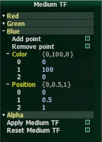
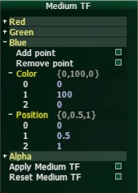

Interactive Dynamic Volume Illumination with Refraction and Caustics
Description
Original paper

This program is an implementation of the paper "Interactive Dynamic Volume Illumination with Refraction and Caustics" by Jens G. Magnus and Stefan Bruckner.
The paper presents a method for interactive rendering of volumetric data by utilizing refraction and caustic effects,
arguing that human perception is capable of reconstructing spatial properties of objects given the presence of distortions caused by refraction.
In comparison to offline rendering methods, no precomputation is necessary. In addition, it is possible to change rendering parameters interactively.
The technique is realized by applying a Semi-Lagrangian scheme to propagate light and viewing rays simultaneously.
The light rays are integrated backward in a plane-by-plane manner. The viewing rays are transmitted forward through the volume.
The planes are generated parallel to the image plane.
Implementation concept
The concept is based on the described pseudocode and consists of the following steps:
- Load models and corresponding transfer functions & initialize all scene parameters like camera and light source.
- Create sphere around model and calculate first plane parallel to image plane intersection with this sphere.
This plane will be used as reference plane for the plane-by-plane calculations.
- Initialize 7 framebuffers with 2 layers for light color and direction, viewing ray position and
direction, accumulated color and medium buffer and the output buffer by means of a compute shader.
These buffers will be used to read the previous and write the information for the current layer in a ping-pong manner.
- Perform light ray propagation by backward-integration together with light intensity correction and view ray propagation
by forward-integration in every rendering step.
Step 4 is the main part of the program. It splits into light and viewing ray propagation.
PUT HERE WHAT FRAGMENT SHADER DOES
Features
- Choose one of 5 different models (see Data).
- Interaction with various rendering parameters like light and camera parameters.
- Modify transfer function for opacity, particle color and transmissive medium.
- Modify transfer function for refraction indices.
- Enable/Disable light intensity correction to recover caustic effects.
- Enable/Disable enviroment mapping to capture contributions visible on the background.
- Enable/Disable viewing ray refraction to deflect the ray in view direction.
- Enable/Disable specular light component with Blinn-Phong model.
- Camera rotation around the object.
- Light movement to the right, left, up and down - always behind and relativ to the camera.
Program
The program was implemented in a C++ framework, uses OpenGL 4.4 and therefore needs a Nvidia platform.
Camera interaction
The camera can be rotated around the object with the keys WASD. The mouse wheel can be used to zoom in and out.
In addition to the manual camera movement, an automatic counter-clockwise rotation around the object can be activated by turning on Rotate.
The parameter Camera Speed can be adjusted to control the speed of the rotation.
Light interaction
The light position is fixed behind the camera. To enable a better interaction, the light can be slightly moved left, right, up and down with the arrow keys.
In order to track the position in view space, the vector between light position and scene center is tracked at Light Pos with
the light position being positioned at the vector shaft. To simplify the representation, only x- and y-coordinates are visualized.
User interface
The user interface was implemented using AntTweakBar library and has several different windows.
All windows can be minimized by clicking to the small arrow in the upper right corner which appears when moving the mouse over the window.
The windows will get minimized to a small arrow icon in the bottomleft corner next to Refraction TF.
Settings
Settings is divided into three parts:
- Mesh: A drop-down menu allows the user to change the object after loading additional meshes.
The number of rendered slices can be changed in order to increase the frames per second or to increase the quality.
- Light: This sections allows control over different light settings: enable/disable
light intensity correction, enviroment mapping, view refraction and specular light components
as well as adjusting the light color and specular exponent and inspecting the light position.
Reset Light restores the initial settings and position.
-
Camera: An automatic counter-clockwise rotation can be enabled and the speed of the camera rotation can be adjusted.
Reset Camera restores the initial settings and camera position.
Refraction TF
Refraction TF controls the transfer function for the refraction index values.
The number of control points is fixed to 3. The 4 values correspond to the refraction index before the frist control point,
between first and second, second and third and after third control point, respectively.
It is recommended to leave the value of the first control point at 1 and keeping the values below 2.5.
Volume TF & Medium TF
The transfer function for the particle color transfer function (called Volume TF) and the transmissive medium (called Medium TF)
can be controlled by 3-5 control points with corresponding RGBA values. The transfer functions for RGBA can be adapted separatly for each channel.
The values for RGB and opacity can be adapted by changing the numerical values.
For the medium color, the alpha value won't have any impact for the rendering.
The button Add point adds a control point at the end with position 1 and color value 255.
In order to avoid an error in the transfer function calculation, the previous last control point is moved to position 0.99 to avoid twice the position 1.
The button Remove point will remove the last control point and the corresponding color.
The changes will be applied once the button Apply TF is pressed.
The Reset TF button will reset the values of the transfer function to the inital settings.
Numerical values can be changed in three different ways. First, the values can be edited by clicking on the field and
entering the values via keyboard. Second, the + and - buttons can be used to change the value by a predefined step size.
And third, the most right button can be used as slider while keeping the mouse button pressed and move the appearing arrow (counter-)clockwise.
Data
The volume data used for this program was taken from
Digital Morphology library, an archive providing high-resolution X-ray computed tomography of biological specimens.
The following datasets have been chosen for the program and can be loaded:
Links
Visualization 2 Project by Hamed Jafari-Sahamieh & Caroline Magg


 
